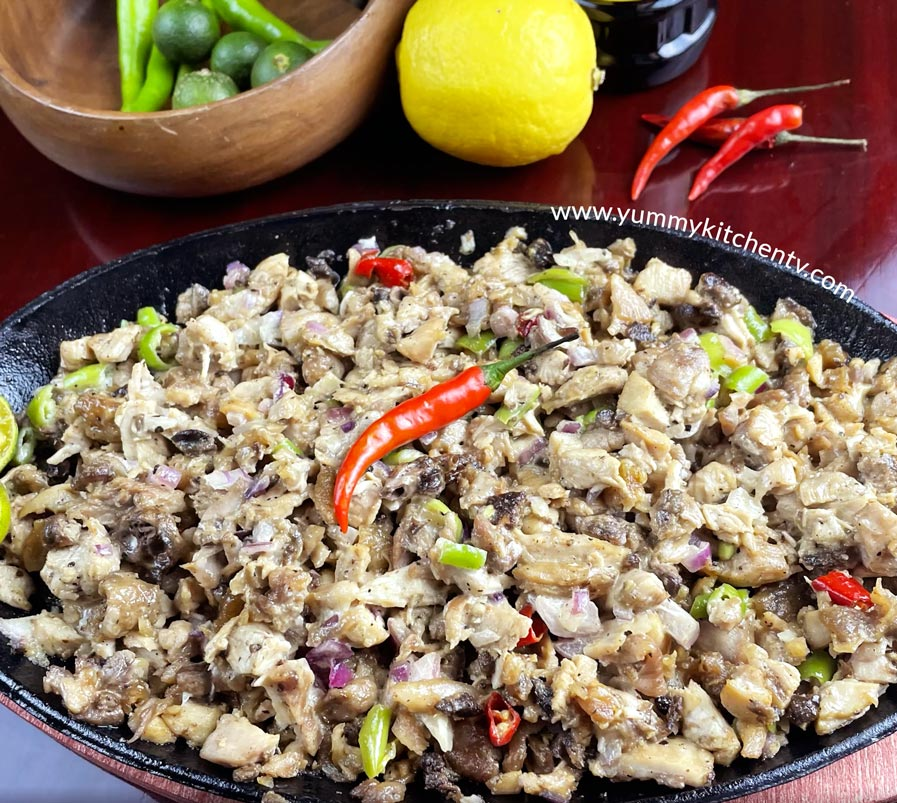

Chicken Sisig

Description
Sizzling Chicken Sisig is the chicken version of the popular sisig dish. This recipe is quick and easy and can be low in fat depending on the type and amount of mayonnaise that will be used.
Sisig is known to be a fatty dish because it usually uses fatty parts of the pig such as the ears and face; the original recipe also uses the brain of the pig as a binder. Chicken sisig, on the other hand, can be considered as a healthier alternative because chicken meat has lesser fat. This recipe in particular makes uses of skinless chicken breast; it is low in fat and high in protein.
Ingredients
- 1 1/2 lbs. grilled chicken breast finely chopped
- 1/4 lb. chicken liver chopped
- 1 cup minced yellow onion
- 1 teaspoon garlic powder
- 2 pieces serrano pepper sliced diagonally
- 2 tablespoons soy sauce
- 1/4 cup butter
- 4 to 5 tablespoons mayonnaise
- 1 egg
- Salt and pepper to taste
- 2 tablespoons cooking oil
Steps
- Heat the cooking oil in a pan
- When the oil becomes hot, saute the onion until it becomes soft
- Add the chicken liver. Cook until the liver browns.
- Add-in the grilled chopped chicken breast. Stir and cook for 3 to 4 minutes.
- Put the garlic powder and soy sauce in. Stir.
- Sprinkle salt and pepper. Stir.
- Add the mayonnaise and then stir right away until all the ingredients are well incorporated.
- Heat the sizzling plate (cast iron pan).
- Once the pan is hot, put the butter in and let it melt.
- Tranfser the chicken sisig on the cast iron pan.
- Crack the egg and drop on top of the chicken.
- Arrange the green chili on top.
- Serve. Share and enjoy!